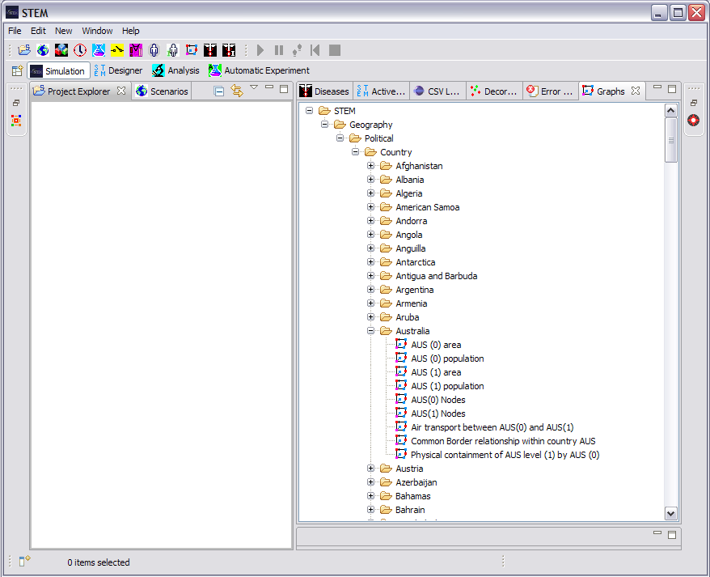

The Graphs View displays the Graphs that are available for use in Scenarios. It contains graphs representing infrastucture such as airports and roads, as well as common border relationships between regions. The available Graphs are organized in a tree. Those listed under "STEM" are built-in to STEM.
The view supports "drag" such that a Graphs can be dragged from this view and "dropped" into an open Model editor.
